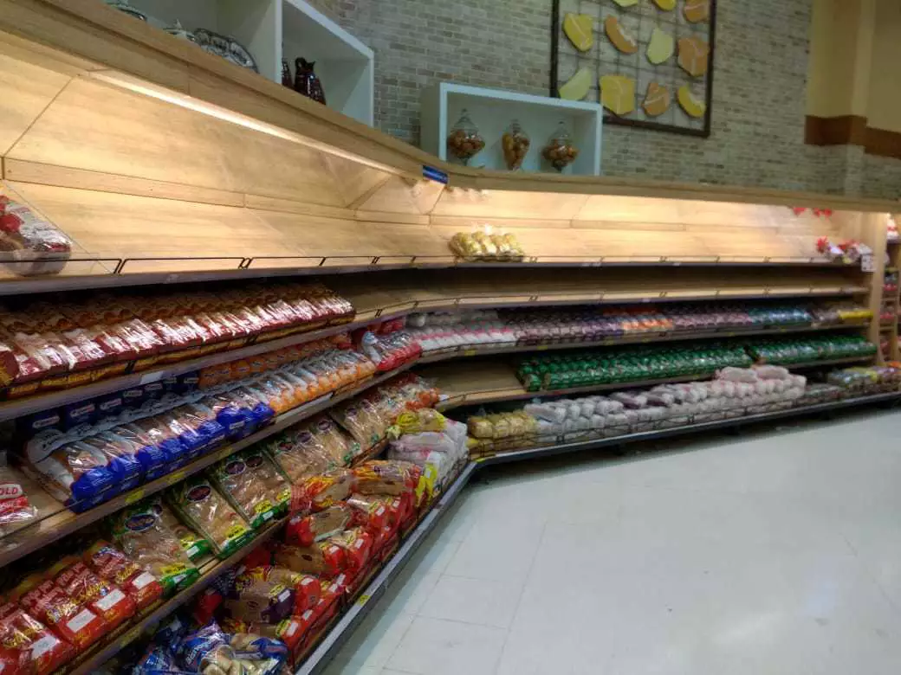
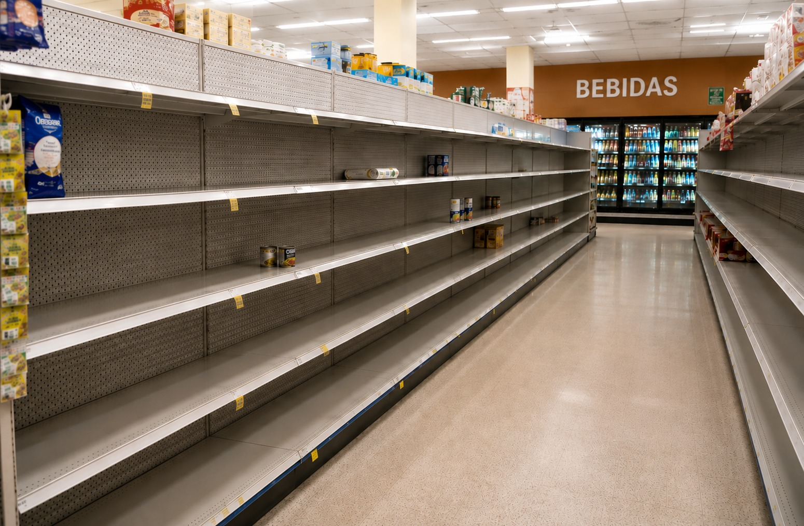
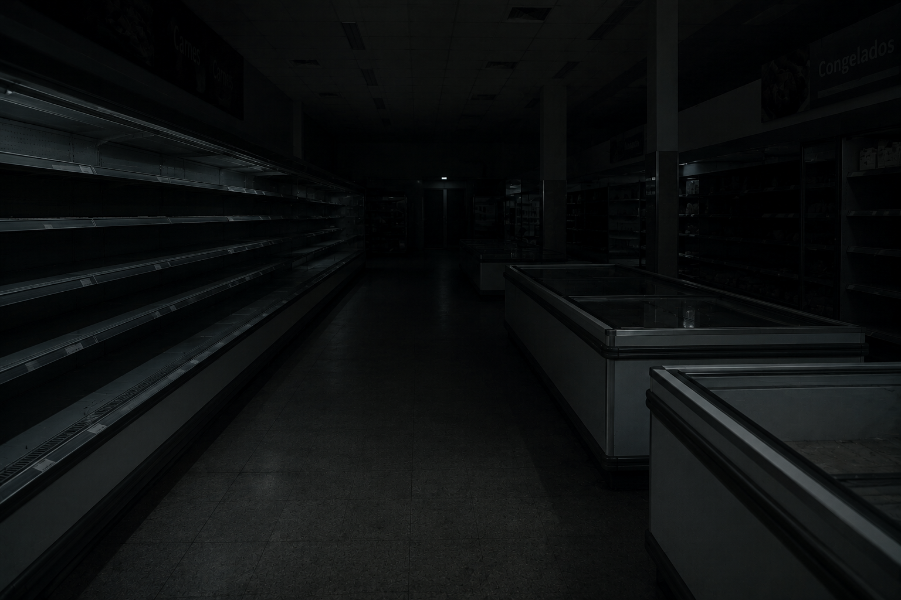
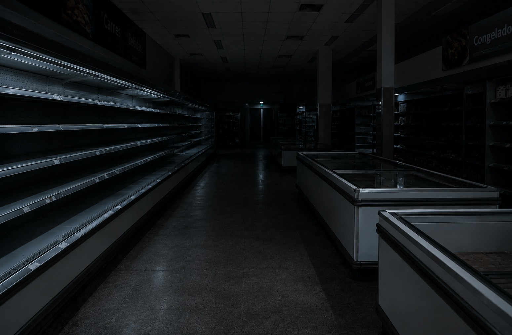

E se o campo parasse?
🌎 Imagine acordar amanhã e descobrir que o campo parou.
🍎 Nenhum alimento novo seria produzido.
🏪 Aos poucos, os mercados começariam a ficar vazios.
💰 Os preços subiriam e produtos básicos se tornariam raros.
⚠️ Em poucas semanas, toda a sociedade sentiria os impactos.
Você Sabia?
🌱 O agro produz alimentos, fibras e matérias-primas.
🍎 Grande parte dos alimentos vem do campo.
🚚 O transporte também depende da produção agrícola.
👨🌾 Milhões de empregos estão ligados ao agronegócio.

Dia 1
A produção de alimentos para.
Não há colheita nem transporte de novos produtos.
O impacto ainda é pequeno porque existem estoques.
RESULTADO: A população quase não percebe.

Dia 7
Frutas, verduras e legumes começam a faltar.
Alguns mercados ficam com prateleiras vazias.
Os preços começam a subir.
RESULTADO: A população já sente os primeiros efeitos.

Dia 30
Escassez de diversos alimentos.
Falta de matéria-prima para indústrias alimentícias.
Aumento significativo dos preços.
Prejuízos para a economia.
RESULTADO: Muitas famílias têm dificuldade para comprar alimentos.

Dia 90
Grave crise de abastecimento.
Falta de alimentos básicos.
Desemprego em vários setores ligados ao campo.
Economia fortemente afetada.
RESULTADO: A sociedade enfrenta uma crise alimentar e econômica.
Uma última pergunta...
Qual destes setores depende do campo?